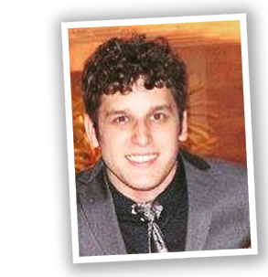

Sysadmin linux, Desenvolvedor PHP Senior, apaixonado por tecnologia e movido a desafios. Solidados conhecimentos em integração e deploy continuo, atualmente busco me especializar em gerencia de configuração e mergulhar cada vez mais na cultura DevOPs.
- Educação
-
Faculdade Atual
Bacharel em Sistemas de Informação
- Idiomas
-
Ingles
Intermediário
Espanhol
Básico
- Experiencias
-
Instruct Consultor Puppet/Gitlab - (09/2017 - 01/2018)
- Desenvolvimento de modulos puppet para clientes
- Desenvolvimento de pipelines GitLab para clientes
- Implementação de ambiente puppet
- Avaliação de código puppet
B2br - Business to business informatica do Brasil. Analista de Infraestrutura - (12/2016 - 10/2017)
Detran-DF
- Administração de servidores Linux
- Gerencia de configuração e provisionamento de maquinas com Puppet
- Implementação de pipelines no Gitlab para Integração e Deploy continuo utilizando containers docker
- Sustentação de aplicações JAVA e PHP
- Sustentação de banco de dados MySQL e PostgreSQL
- Migração Puppet 3 para Puppet 4
- Criação/melhorias de modulos para tarefas especificas
- Definição de arquitetura de roles e profiles
- Criação de fato personalizado utilizando ruby
- Utilização de multiplos backends para o hiera.
Cast Group Analista de Sistemas Pleno - (09/2015 - 12/2016)
INEP
- Desenvolvimento módulos e componentes para sistemas internos em PHP
- Ponte entre fabrica de software externa e analista de requisitos
- Alinhamento de arquitetura de sistemas com equipe do órgão
- Acompanhamento de entregas realizadas pela fábrica de software
- Revisão de código entregue pela fábrica para adequaçoes a padroes de qualidade
- Elaboração de consultas complexas em SQL
- Construção e aperfeiçoamento constante de geradores de códigos e bibliotecas para auxilio das equipes de desenvolvimento e requisitos
Websis Tecnologia Desenvolvedor FullStack PHP - (02/2013 - 09/2015)
Projetos Internos
- Desenvolvimento de sistemas para controle de OS da fábrica
- Implementação de ambientes para validação de projetos e homologação interna
- Implementação do Gitlab e uso de git na empresa substituindo svn controle de versão
- Implementação de servidor LDAP (OpenLdap) para gerenciamento de usuário e acessos
- Implementação do Tempass para controle de senhas
DETRAN-DF
- Desenvolvimento da arquitetura base para os novos sistemas internos em php do Detran
- Desenvolvimento de ETL para viabilizar a integração de sistemas legados que utilizam MySQL com os novos sistemas em Postgresql
- Implementação da ferramenta Gitlab no Detran para versionamento de código
- Implementação de WebHook para deploys automatizados em ambiente de desenvolvimento e homologação
- Implementação de ferramentas integração continua para controle e e qualidade de software com Gitlab-ci
CBMDF-DF
- Desenvolvimento de sistemas internos utilizando PHP
- Implementação da ferramenta PHPUnderControl para integração continua executando testes unitários e de qualidade do código (Ex. PHPCS, PHPUnit, PHPMD, PHPCPD, PHPDOC)
- Certificações
- Zend Certified PHP Engineer (ZEND027075)
- Puppet Certified Professional 2017 (PCP205-0073)